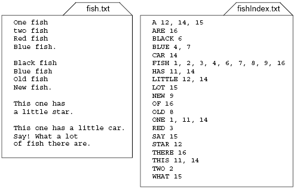
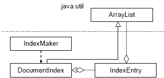

In this lab you will write a program that reads a text file and generates an index for it. All the words that occur in the text should be listed in the index in upper case in alphabetical order. Each word should be followed by a list of all the line numbers for lines that contain that word. Figure 12-6 shows an example.
The Index Maker program consists of three classes (Figure 12-7). It
also uses ArrayList in two ways: IndexEntryArrayList<Integer> field that holds the line
numbers, and DocumentIndexArrayList<.IndexEntry>
The IndexMaker class is the main class. We have provided this
class for you in JM\Ch12\IndexMaker.
Its main method prompts the user for the names of the input and output files (or
obtains them from command-line arguments, if supplied), opens the input file,
creates an output file, reads and processes all the lines from the input file,
then saves the resulting document index in the output file.
Writing the DocumentIndex and IndexEntry classes is
left to you (possibly in a team with another programmer). You don't have to deal
with reading or writing files in this lab.

Figure 12-6. A sample text file and its index

Figure 12-7. IndexMaker classes
IndexEntryAn IndexEntry object represents one index entry. It
has two fields:
private String word; private ArrayList<Integer> numsList;
The numbers in numsList represent the line numbers where word
occurs in the input file. (Note that the IndexEntry class is quite
general and reusable: the numbers can represent line numbers, page numbers,
etc., depending on the application.)
Provide a constructor for this class that takes a given word (a String),
converts it into the upper case (by calling toUpperCase), and saves
it in word. The constructor should also initialize numsList to an
empty ArrayList<Integer>.
This class should have the following three methods:
void add(int num) — appends num to numsList,
but only if it is not already in that list. You will need to convert num
into an Integer to call numsList's contains
method.String getWord() — this is an accessor method; it returns word.String toString() — returns a string representation of this
IndexEntry in the format used in each line of the output file
(Figure 12-6).DocumentIndex classA DocumentIndex object represents the entire index for a
document: the list of all its index entries. The index entries should always be
arranged in alphabetical order, as in Figure 12-6.
Make the DocumentIndex class extend ArrayList<IndexEntry>.
Provide two constructors: one that creates a list with the default capacity, the
other that creates a list with a given capacity. (These constructors simply call
the respective constructors of the superclass, ArrayList.)
DocumentIndex should have the following two methods:
void addWord(String word, int num) — addWord
adds num to the IndexEntry for word by calling
that IndexEntry's add(num) method. If word
is not yet in this DocumentIndex, the method first creates a
new IndexEntry for word and inserts it into this
list in alphabetical order (ignoring the upper and lower case).
void addAllWords(String str, int num) — extracts all the
words from str (skipping punctuation and whitespace) and for
each word calls addWord(word, num).
You could code the word extractor yourself, of course, but it is much
better to use the String class's split method.
Look it up in the Java API. Use the one that takes one parameter, regex,
that is, a regular expression. Regular expressions are not specific
to Java: they are used in many languages and text parsers. regex
describes the match pattern for all possible word separators. Use "\\W+"
here. \W (with an uppercase 'W') stands for any
"non-word" character, that is, any character that is not a digit
or a letter. + means "occurs at least once." (Regular
expressions use backslash as the escape character; hence the double
backslash in the literal string.)
split returns an array of Strings. Use a
"for each" loop to call addWord for each word in that
array. Note, however, that split may put an empty string into the resulting
array — when str starts with a separator or when str
is empty. This is an unfortunate decision (or a bug). Make sure you skip
empty strings and do not call addWord for them.
We recommend that you also define a private helper method
and call it fromprivate int foundOrInserted(String word)
addWord. This method should traverse this DocumentIndex
and compare word (case-blind) to the words in the IndexEntry
objects in this list, looking for the position where word fits in
alphabetically. If an IndexEntry with word is not already in that
position, the method creates and inserts a new IndexEntry for word
at that position. The method returns the position (we'd like to say "the
index" but we have too many indices going already!) of the either found or
inserted IndexEntry.
Test your program thoroughly on different text data files, including an empty file, a file with blank lines, a file with lines that have leading spaces or punctuation, a file with multiple occurrences of a word on the same line, and a file with the same word on different lines.